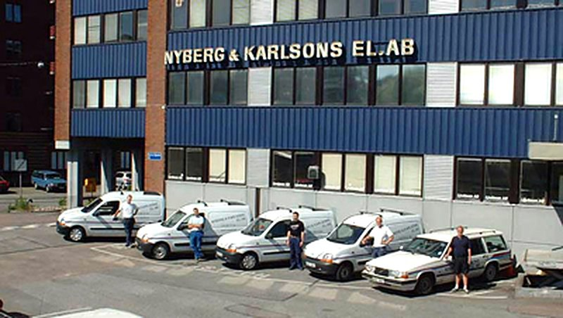

Elinstallationer i Göteborg sedan 1910
Nyberg & Karlsons Elektriska AB har sedan 1910 utfört elinstallationer i Göteborgsområdet, främst servicearbeten åt industri, fastighetsförvaltning och butiker.
Servicearbeten, nyproduktion och ombyggnader
Verksamheten består i huvudsak av servicearbeten åt en stor kundkrets inom industri, fastighetsförvaltning och butiker, men även en del nyproduktion och ombyggnader.
Elfirma i Göteborg för industri, fastighet och butik
Våra kunder finns inom industri, fastighetsförvaltning och butiker. Det är åt dem vi utför den största delen av våra servicearbeten.
Ni når våra projektledare direkt, eller växeln på 031-80 13 50.
Det här arbetar vi med
Mer än hundra år i Göteborgsområdet
Nyberg & Karlsons Elektriska AB startades 1910 och har sedan dess utfört elinstallationer i Göteborgsområdet.
Kontoret finns på Norra Ågatan 10 i Göteborg.
Kontakta våra projektledare direkt.
Har ni ett servicejobb, en ombyggnad eller ett nytt projekt? Ring eller mejla någon av våra projektledare.
Ett etablerat elföretag sedan 1910
Nyberg & Karlsons Elektriska AB har funnits sedan 1910 och har under hela den tiden utfört elinstallationer i Göteborgsområdet.
Servicearbetena är kärnan i verksamheten, och kundkretsen finns inom industri, fastighetsförvaltning och butiker.
- Elinstallationer i Göteborgsområdet sedan 1910
- Främst servicearbeten
- Kunder inom industri, fastighetsförvaltning och butiker
- Även nyproduktion och ombyggnader
- Projektledare som ni når direkt
Behöver ni hjälp med el?
Berätta vad som ska göras så återkommer vi. Ni når oss på 031-80 13 50 eller mail@nykael.se.